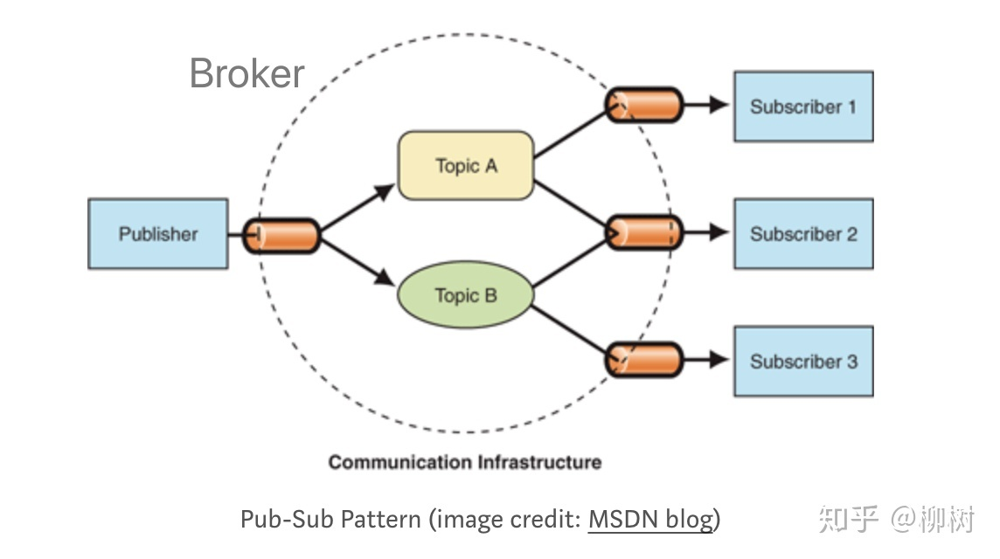

1，使用设计模式的目的是为了可重用代码，提高代码的可扩展性和可维护性。实现可维护、可扩展，就必须尽量复用代码，并且降低代码的耦合度。
2，依赖注入：是指当一个对象要与其他对象发生依赖关系时，通过抽象来注入所依赖的对象。常用的注入方式有四种，分别是：构造注入，设值注入（Setter注入），接口注入，基于注解注入。构造注入是指通过构造函数，在新建对象时传入所依赖类型的对象；设值注入是指通过Setter方法，让外部容器调用传入所依赖类型的对象；而接口注入是指通过在接口中声明的业务方法来传入具体类的对象；基于注解注入，在私有变量前加@Autowired等注解，不需要显式的定义以上三种代码，便可以让外部容器传入对应的对象。该方案相当于定义了public的set方法，但是因为没有真正的set方法，从而不会为了实现依赖注入导致暴露了不该暴露的接口（因为set方法只想让容器访问来注入而并不希望其他依赖此类的对象访问）。
这些方法在定义时使用的是抽象类型，在运行时再传入具体类型的对象，由子类对象来覆盖父类对象。对象在运行时而不是在编译时被赋予它们的依赖关系。对对象的『依赖』是注入进来的，而和它的构造方式解耦了。构造它这个『控制』操作也交给了第三方，也就是控制反转，显现了和依赖的解耦。
优势是可复用注入的对象，该对对象可以注入到多个地方，减小了创建多个相同对象的开销，并且保证了依赖对象都是相同的，以后修改注入的对象也只需要修改一处即可。。
3，开闭原则是目标，里氏代换原则是基础，依赖倒转原则是手段 。开闭原则，里氏替换原则，依赖倒置原则与依赖注入关系：定义一个抽象类/接口A，类/接口中定义抽象方法m，各个子类/实现类B,C根据自身需求重写抽象方法m。
2,七大原则：
开闭原则：软件应该对扩展开放，而对修改关闭。这里的意思是在增加新功能的时候，能不改代码就尽量不要改，如果只增加代码就完成了新功能，那是最好的，易于扩展复用、封装实现细节、降低耦合度。
开放：对功能或需求的扩展开放，当有新需求或变化时，可依据现有的程序代码进行扩展，以便适应新要求；封闭：意味着一旦设计完成，便可以独立工作，不能对其进行任何的修改，软件实体应尽量在不修改原有代码的情况下进行扩展。
为系统定义一个相对稳定的抽象层，而将不同的实现行为移至具体的实现层中完成。通过接口、抽象类等机制定义系统的抽象层，再通过具体类来进行扩展。如果需要修改系统的行为，无须对抽象层进行任何改动，只需要增加新的具体类来实现新的业务功能即可，实现在不修改已有代码的基础上扩展系统的功能，达到开闭原则的要求。
里氏替换原则：即如果我们调用一个父类的方法可以成功，那么替换成子类调用也应该完全可以运行。所有基类出现的地方，都可以使用子类进行替换，子类可以扩展父类的功能，但不能改变父类原有的功能，所以基类对象出现的地方，子类对象一定可以出现，但反过来则不行。
里氏代换原则是实现开闭原则的重要方式之一，由于使用基类对象的地方都可以使用子类对象，因此在程序中尽量使用基类类型来对对象进行定义，而在运行时再确定其子类类型，用子类对象来替换父类对象。
子类必须实现父类中声明的所有方法；尽量把父类设计为抽象类或者接口，让子类继承父类或实现父接口，并实现在父类中声明的方法，运行时，子类实例替换父类实例，增加新的功能可以通过增加一个新的子类来实现；在传递参数、定义成员变量、定义局部变量、确定方法返回类型时都可使用里氏代换原则，针对基类编程，在程序运行时再确定具体子类。
依赖倒置原则：要依赖于抽象，不要依赖于实现。高层模块不依赖于底层模块，二者都依赖其抽象；抽象不依赖于细节，细节应该依赖抽象。应当使用接口和抽象类进行变量类型声明、参数类型声明、方法返还类型说明，以及数据类型的转换等。而不要用具体类进行上述操纵。一个具体类应当只实现接口和抽象类中声明过的方法，而不要给出多余的方法，否则将无法调用到在子类中增加的新方法。
抽象层包含的应该是应用系统的商务逻辑和宏观的、对整个系统来说重要的战略性决定，是必然性的体现。具体层次含有的是一些次要的与实现有关的算法和逻辑，以及战术性的决定，带有相当大的偶然性选择。具体层次的代码是经常变动的，不能避免出现错误。从复用的角度来说，高层次的模块是应当复用的，而且是复用的重点，因为它含有一个应用系统最重要的宏观商务逻辑，是较为稳定。
如果系统行为发生变化，只需要对抽象层进行扩展，并修改配置文件，而无须修改原有系统的源代码，在不修改的情况下来扩展系统的功能，满足开闭原则的要求。
单一职责原则：一个类只负责一项职责。针对一个类，其承担的职责越多，被复用的可能性就越小。如果类承担的职责很多，就意味着这些职责耦合在了一起，若其中一项职责发生变化，就可能会影响其他职责的处理，因此要将这些职责进行分离，将不同的职责封装在不同的类中，即将不同的变化原因封装在不同的类中，如果多个职责总是同时发生改变则可将它们封装在同一类中。
接口隔离原则：当一个接口太大时，我们需要将它分割成一些更细小的接口，客户需要什么样的接口，就提供什么样的接口，不需要的就删除掉；类之间的依赖关系应建立在最小的接口上。也就是说，接口中的方法要尽量的少，接口功能要尽量的细分。
为了使接口的职责单一，需要将大接口中的方法根据其职责不同分别放在不同的小接口中，以确保每个接口使用起来都较为方便，并都承担某一单一角色。接口应该尽量细化，同时接口中的方法应该尽量少，每个接口中只包含一个客户端（如子模块或业务逻辑类）所需的方法即可，这种机制也称为“定制服务”，即为不同的客户端提供宽窄不同的接口。
如果不细分接口，在不同的实现类中都不得不实现接口中定义的所有方法，灵活性较差，如果出现大量的空方法，将导致系统中产生大量的无用代码，影响代码质量；另一方面由于客户端针对大接口编程，将在一定程序上破坏程序的封装性，客户端看到了不应该看到的方法，没有为客户端定制接口。
我们需要注意控制接口的粒度，接口不能太小，如果太小会导致系统中接口泛滥，不利于维护；接口也不能太大，太大的接口将违背接口隔离原则，灵活性较差，使用起来很不方便。一般而言，接口中仅包含为某一类用户定制的方法即可，不应该强迫客户依赖于那些它们不用的方法。
迪米特法则：一个类对自己所依赖的类知道的越少越好，对于被依赖的类，不论其实现逻辑如何，都将这些逻辑封装在自己的范围内，对外通过public(protected可以通过子类访问)方法进行提供服务，否则不对外泄露任何信息，这也体现了数据保密性。应该尽量减少对象之间的交互，如果两个对象之间不必彼此直接通信，那么这两个对象就不应当发生任何直接的相互作用，如果其中的一个对象需要调用另一个对象的某一个方法的话，可以通过第三者转发这个调用。简言之，就是通过引入一个合理的第三者来降低现有对象之间的耦合度。
组合/聚合复用原则：尽量使用对象的组合/聚合，而不是继承来达到复用的目的。
聚合（Has a)表示整体与部分的关系，表示“含有”，整体由部分组合而成，部分可以脱离整体作为一个独立的个体存在。新对象通过委派调用已有对象的方法达到复用功能的目的，使得成员对象的内部实现细节对于新对象不可见，所以这种复用又称为“黑箱”复用，相对继承关系而言，其耦合度相对较低，成员对象的变化对新对象的影响不大，可以在新对象中根据实际需要有选择性地调用成员对象的操作；合成复用可以在运行时动态进行，新对象可以动态地引用与成员对象类型相同的其他对象。操作类持有抽象类引用，根据需要将子类对象作为依赖注入，在满足里氏代换原则的条件下，不用修改操作类。
继承(Is a)使得基类与子类有较强的耦合性，部分和整体的生命周期一样，新的对象完全支配其组成部分，并且基类的内部细节对子类来说是可见的，这样基类的实现细节会暴露给子类，称为“白箱”复用，破坏了系统的封装性。如果基类发生改变，那么子类的实现也不得不发生改变；从基类继承而来的实现是静态的，不可能在运行时发生改变，没有足够的灵活性，继承要遵循里氏代换原则。
简单工厂模式：定义一个工厂类，根据传入的参数不同返回不同的实例，被创建的实例具有共同的父类或接口。由于工厂类封装了对象的创建过程，所以客户端应该不关心对象的创建。适用于需要创建的对象较少；客户端不关心对象的创建过程。
1public interface Reader {2 void read();3}4public class JpgReader implements Reader {5 6 public void read() {7 System.out.print("read jpg");8 }9}10public class PngReader implements Reader {11 12 public void read() {13 System.out.print("read png");14 }15}16 public class Factory {17 public static Reader getReader(String type) {18 if (type.equalsIgnoreCase("jpg")) {19 return new JpgReader();20 } else if (type.equalsIgnoreCase("png")) {21 return new PngReader();22 } 23 }24}工厂方法模式不再提供一个统一的工厂类来创建所有的对象，而是针对不同的对象提供不同的工厂，每个对象都有一个与之对应的工厂，将生产任务交给不同的派生类工厂，这样不用通过指定类型来创建对象了。让子类工厂决定将哪一个类实例化，让一个类的实例化延迟到其子类。客户端不需要知道它所创建的对象的类，不需要知道每个产品具体叫什么名，只知道创建它的工厂名就完成了创建过程。使得创建对象和使用对象是分离的，并且客户端总是引用抽象工厂和抽象产品，以便工厂方法能随时切换不同的子类返回，却不影响调用方代码。
x1public interface ReaderFactory {2 Reader getReader();3}4public class JpgReaderFactory implements ReaderFactory {5 6 public Reader getReader() {7 return new JpgReader();8 }9}10public class PngReaderFactory implements ReaderFactory {11 12 public Reader getReader() {13 return new PngReader();14 }15}16
17Factory factory=new JpgReaderFactory();18Reader reader=factory.getReader();19reader.read();20
21Factory factory=new PngReaderFactory();22Reader reader=factory.getReader();23reader.read();抽象工厂模式：工厂是抽象的，产品是抽象的。这个抽象工厂会对应到多个实际工厂，每个实际工厂负责创建多个实际产品。AbstractFactory（抽象工厂）声明了一组用于创建不同产品的方法。ConcreteFactory（具体工厂）：它实现了在抽象工厂中声明的创建对象的方法，生成一组具体对象。AbstractProduct（抽象产品）：它为每种对象声明接口，在其中声明了对象所具有的业务方法。ConcreteProduct（具体产品）：它定义具体工厂生产的具体对象。
抽象工厂模式是为了让创建工厂和一组产品与使用相分离，并可以随时切换到另一个工厂以及另一组产品；抽象工厂模式实现的关键点是定义工厂接口和产品接口，但如何实现工厂与产品本身需要留给具体的子类实现，客户端只和抽象工厂与抽象产品打交道。
xxxxxxxxxx611// 抽象工厂2public interface AbstractFactory {3 // 创建Html文档:4 HtmlDocument createHtml(String md);5 // 创建Word文档:6 WordDocument createWord(String md);7}8
9// 抽象产品10public interface HtmlDocument {11 void save(Path path) throws IOException;12}13public interface WordDocument {14 void save(Path path) throws IOException;15}16
17// 实际产品18public class FastHtmlDocument implements HtmlDocument {19 public void save(Path path) throws IOException {}20}21
22public class FastWordDocument implements WordDocument {23 public void save(Path path) throws IOException {}24}25// 实际工厂26public class FastFactory implements AbstractFactory {27 public HtmlDocument createHtml(String md) {28 return new FastHtmlDocument(md);29 }30 public WordDocument createWord(String md) {31 return new FastWordDocument(md);32 }33}34
35// 实际产品:36public class GoodHtmlDocument implements HtmlDocument {37 public void save(Path path) throws IOException {}38}39public class GoodWordDocument implements HtmlDocument {40 public void save(Path path) throws IOException {}41}42
43// 实际工厂:44public class GoodFactory implements AbstractFactory {45 public HtmlDocument createHtml(String md) {46 return new GoodHtmlDocument(md);47 }48 public WordDocument createWord(String md) {49 return new GoodWordDocument(md);50 }51}52
53//使用54// 创建AbstractFactory，实际类型是FastFactory:55AbstractFactory factory = new FastFactory();56// 生成Html文档:57HtmlDocument html = factory.createHtml("#Hello\nHello, world!");58html.save(Paths.get(".", "fast.html"));59// 生成Word文档:60WordDocument word = factory.createWord("#Hello\nHello, world!");61word.save(Paths.get(".", "fast.doc"));动态地给一个对象添加一些额外的职责。就增加功能来说，相比生成子类更为灵活。n个功能共产生
把核心功能和附加功能给分开了。如果我们要新增核心功能，就增加Component的子类。如果我们要增加附加功能，就增加Decorator的子类。两部分都可以独立地扩展，而具体如何附加功能，由调用方自由组合，从而极大地增强了灵活性。
xxxxxxxxxx61// 创建原始的数据源: 核心功能2InputStream fis = new FileInputStream("test.gz");3// 增加缓冲功能:第一层装饰4InputStream bis = new BufferedInputStream(fis);5// 增加解压缩功能:第二层装饰6InputStream gis = new GZIPInputStream(bis);保证一个类仅有一个实例，并提供一个访问它的全局访问点。单例的构造方法必须是private，这样就防止了调用方自己创建实例，但是在类的内部，是可以用一个静态字段来引用唯一创建的实例的，供一个静态方法，直接返回实例。
xxxxxxxxxx111public class Singleton {2 // 静态字段引用唯一实例:3 private static final Singleton INSTANCE = new Singleton();4 // 通过静态方法返回实例:5 public static Singleton getInstance() {6 return INSTANCE;7 }8 // private构造方法保证外部无法实例化:9 private Singleton() {10 }11}延迟加载：即在调用方第一次调用getInstance()时才初始化全局唯一实例，在多线程中是错误的，在竞争条件下同时发现实例为空，会创建出多个实例。必须对整个方法进行加锁：public synchronized static Singleton getInstance()，但加锁会严重影响并发性能。
双重检查:如果多个线程同时了通过了第一次检查，并且其中一个线程首先通过了第二次检查并实例化了对象，那么剩余通过了第一次检查的线程就不会再去实例化对象。除了初始化的时候会出现加锁的情况，后续的所有调用都会避免加锁而直接返回，解决了性能消耗的问题。
xxxxxxxxxx321public static Singleton getInstance() {2 if (INSTANCE == null) {3 synchronized (Singleton.class) {4 if (INSTANCE == null) {5 INSTANCE = new Singleton();6 }7 }8 }9 return INSTANCE;10}11
12// 优化13public class Singleton {14 // 静态字段引用唯一实例:15 private static volatile Singleton INSTANCE ;16 // 通过静态方法返回实例:17 public static Singleton getInstance() {18 if (INSTANCE == null) {19 synchronized (Singleton.class) {20 if (INSTANCE == null) {21 // volatile 保证了此行代码不会被重排序，从而保证可以返回一个完整初始化的对象22 INSTANCE = new Singleton();23 }24 }25 }26 return INSTANCE;27 }28 // private构造方法保证外部无法实例化:29 private Singleton() {30 }31}32
INSTANCE = new Singleton();分配内存空间->初始化对象->将对象指向刚分配的内存空间。但编译器为了性能的原因，可能会将第二步和第三步进行重排序：分配内存空间->将对象指向刚分配的内存空间->初始化对象。当进行完第二步后，另一个线程尝试获取对象现象对象非空，然后获取返回，此时对象还未完成初始化，导致后续产生错误。为此需要在INSTANCE前加入关键字volatile，重排序被禁止，所有的写（write）操作都将发生在读（read）操作之前。
xxxxxxxxxx161// 优化2public class Singleton {3 // 不存在静态变量，始化过程就会顺利完成。4 5 // 通过静态方法返回实例:6 public static Singleton getInstance() {7 return holder.INSTANCE;8 }9 // private构造方法保证外部无法实例化:10 private Singleton() {11 }12 // 定义在类里面的静态类holder直到JVM确定holder一定会被执行时才会去初始化。当静态方法getInstance调用时，静态类LazyHolder才会被执行13 private static class holder{14 private static final Singleton INSTANCE=new Singleton();15 }16}
如果没有特殊的需求，使用Singleton模式的时候，最好不要延迟加载，这样会使代码更简单。
对于Web程序大部分服务类都应该被视作Singleton，如果全部按Singleton的写法写，会非常麻烦，所以，通常是通过约定让框架（例如Spring）来实例化这些类，保证只有一个实例，调用方自觉通过框架获取实例而不是new操作符。
定义一个操作中的算法的骨架，对于某些暂时确定不下来的步骤，就留给子类去实现好了，这样不同的子类就可以定义出不同的步骤，使得子类可以不改变一个算法的结构即可重定义该算法的某些特定步骤。
为了防止子类重写父类的骨架方法，可以在父类中对骨架方法使用final。对于需要子类实现的抽象方法，一般声明为protected，使得这些方法对外部客户端不可见。Java标准库也有很多模板方法的应用，AbstractQueuedSynchronizer都定义了很多通用操作，子类只需要实现某些必要方法。
定义对象间的一种一对多的依赖关系，当一个对象的状态发生改变时，所有依赖于它的对象都得到通知并被自动更新。观察者模式（Observer）又称发布-订阅模式（Publish-Subscribe：Pub/Sub）。它是一种通知机制，让发送通知的一方（被观察方）和接收通知的一方（观察者）能彼此分离，互不影响。
通知者不能直接引用被通知者，不然耦合度太高，新加被通知者就要修改通知者代码。它引用一个Observer接口对象的集合，任何想要得到通知的对象，只要实现该接口，并且把自己注册到通知者即可，每当要发通知时，通知者遍历集合给被通知者发送消息。
广义的观察者模式包括所有消息系统。所谓消息系统，就是把观察者和被观察者完全分离，通过消息系统本身来通知：消息发送方称为Producer，消息接收方称为Consumer，Producer发送消息的时候，必须选择发送到哪个Topic。Consumer可以订阅自己感兴趣的Topic，从而只获得特定类型的消息。

异步通知：使得所有观察者可以并发同时处理。多线程方式，对每个观察者开一个线程发送通知，缺点开销大，使用线程池，重用线程，限制线程数，使用集合保存submit（）返回的Future对象，然后遍历该集合,使用带超时参数的get，如果超时还未成功返回，直接取消执行，防止卡死。
将一个类的接口转换成客户希望的另外一个接口，使得原本由于接口不兼容而不能一起工作的那些类可以一起工作。Adapter的步骤如下：实现目标接口A；内部持有一个待转换接口B的引用；在目标接口A的实现方法内部，调用待转换接口B的方法。
xxxxxxxxxx91public BAdapter implements B {2 private A a;3 public BAdapter(A a) {4 this.a = a;5 }6 public void b() {7 a.a();8 }9}FutureTask
xxxxxxxxxx241public class FutureTask<V> implements RunnableFuture<V> {2 private Callable<V> callable;3 public FutureTask(Callable<V> callable) {4 this.callable = callable;5 }6 public void run() {7 try {8 Callable<V> c = callable;9 V result;10 boolean ran;11 try {12 result = c.call();13 ran = true;14 } catch (Throwable ex) {15 result = null;16 ran = false;17 setException(ex);18 }19 if (ran)20 set(result);21 } finally {22 }23 }24}为其他对象提供一种代理以控制对这个对象的访问。在代理类中实现权限检查等额外功能。对被代理类无改变，职责清晰：一个类只负责一件事；易于测试：一次只测一个功能。
xxxxxxxxxx111public AProxy implements A {2 private A a;3 public AProxy(A a) {4 this.a = a;5 }6 public void a() {7 doSomethingBrfore();8 this.a.a();9 doSomethingAfter();10 }11}虚代理：Virtual Proxy：它让调用者先持有一个代理对象，但真正的对象尚未创建。如果没有必要，这个真正的对象是不会被创建的，直到客户端需要真的必须调用时，才创建真正的对象。JDBC的连接池返回的JDBC连接（Connection对象）就可以是一个虚代理，即获取连接时根本没有任何实际的数据库连接，直到第一次执行JDBC查询或更新操作时，才真正创建实际的JDBC连接。
保护代理：Protection Proxy，它用代理对象控制对原始对象的访问，常用于鉴权。
智能引用：Smart Reference，它也是一种代理对象，如果有很多客户端对它进行访问，通过内部的计数器可以在外部调用者都不使用后自动释放它。